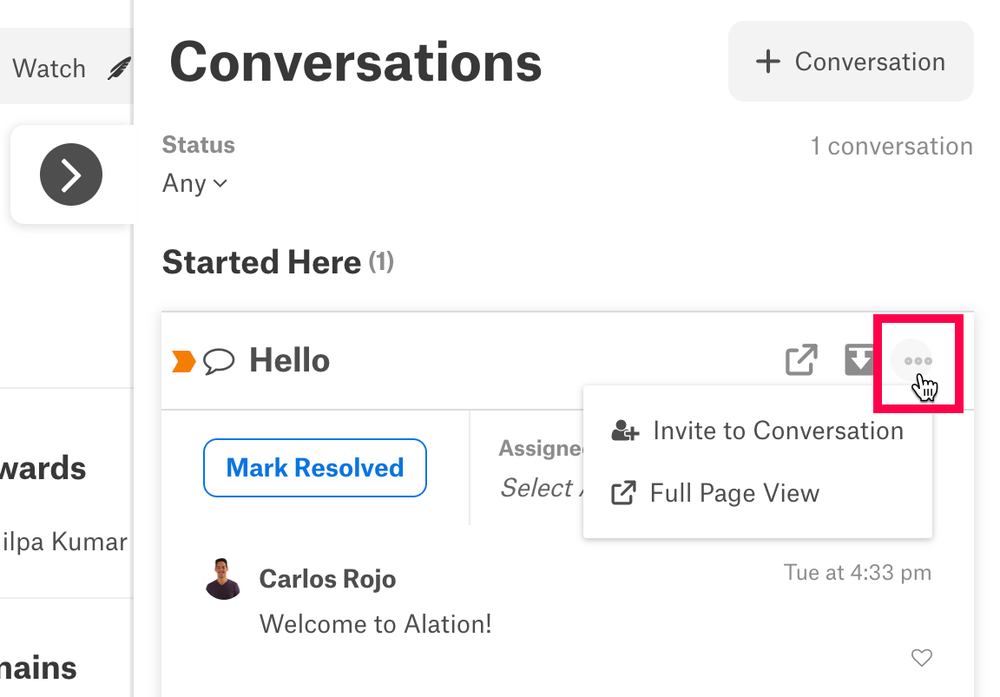
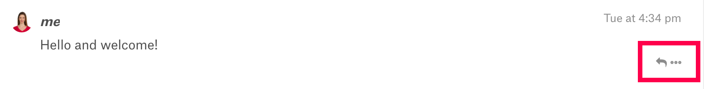
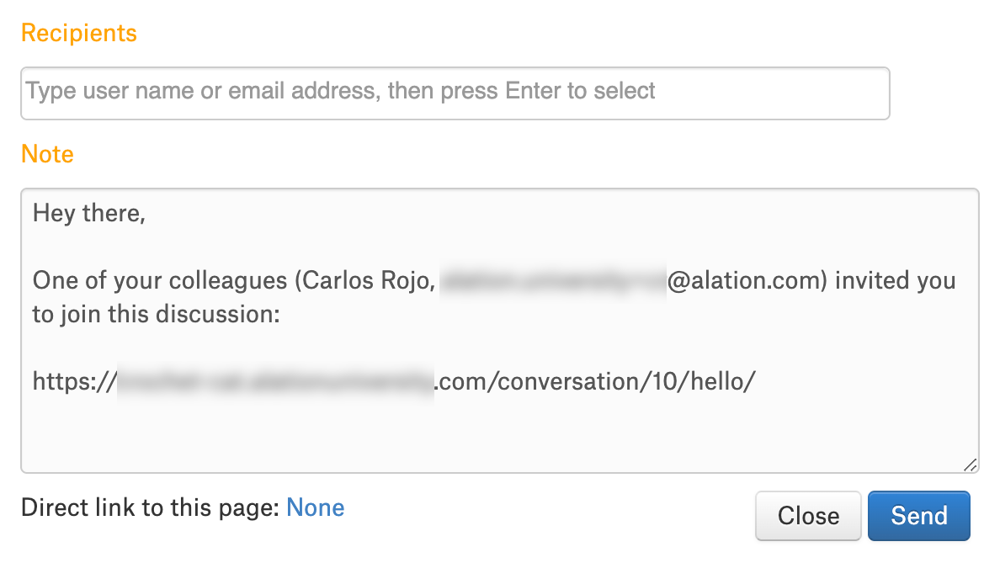

Interacting with Conversations¶
Alation Cloud Service Applies to Alation Cloud Service instances of Alation
Customer Managed Applies to customer-managed instances of Alation
Every catalog user has the opportunity to contribute to Conversations that have been posted in Alation. Users can easily access a posted Conversation if it appears in their Inbox, and they also have the opportunity to discover any Conversation by opening the Conversations slideout or conducting a search.
Once you find a Conversation, you can participate in it by:
Replying to it.
Interacting with other users’ comments.
Making changes to the Conversation’s connections.
Resolving or reopening the Conversation.
Inviting other users to join the discussion.
If you’re the Conversation’s author, you can also:
Edit the body text of the Conversation.
Delete the entire Conversation.
You can interact with a Conversation anywhere you find it in the catalog. All of a Conversation’s interactive features are available inside your Inbox or a Conversations slideout, but you can also open the Conversation in full-page view to see it independent of other catalog pages.
Full-Page View¶
When you open a Conversation in full-page view, Alation displays it by itself in the catalog interface. Full-page view acts like a Conversation’s catalog page and provides easy access to all of its components and features.
Conversations that you access from the Conversations panel or the search page always open in full-page view. You can also open a Conversation in full-page view from the Conversations slideout using the steps below.
Click the slideout tab to open the Conversations slideout and view the Conversations in its Started Here and Mentioning This areas. (For screenshots and more details about the Conversations slideout, see the Conversations slideout section of Finding Conversations.)
Click the Conversation you’d like to see in full-page view. The Conversation will expand so that you can see all of its components.
Click the three dots ( … ) in the Conversation’s upper-right corner.
From the dropdown menu that opens, select Full Page View.
{kind=link}
Note
Conversations can’t be opened in full-page view from inside your Inbox. They open inside your Inbox’s reading pane, and you can access all of their features from there.
Participant Capabilities¶
Any catalog user can interact with a catalog Conversation as a participant, including the Conversation’s author. The Conversations feature allows participants to build on a Conversation in a variety of ways.
You can participate in a Conversation if you’ve opened it inside the Inbox, the Conversations slideout, or full-page view. In order to participate in a Conversation inside the Inbox or a Conversations slideout, you must click its list entry to see it in an expanded view.
Once you’ve opened a Conversation inside one of these areas, you can use the directions in the sections below to interact with it.
Posting a New Reply¶
Participants have the opportunity to add content to a Conversation by posting comments in its reply thread.
To reply to a Conversation in Alation, follow these steps:
Click the Reply button displayed in the Conversation’s lower-left corner. If the Conversation has been marked resolved, click the Reopen to Reply button. A reply dialog will open below the Conversation.
Enter text in the reply dialog.
Note
If you want to link the Conversation to a catalog object or user in your reply, you can insert an @-mention at this step. Use the directions in Body @-mentions to create an @-mention.
If you @-mention a catalog user, Alation will send them a notification after you post your reply.
When you’re finished creating your comment, click Post in the reply dialog’s lower-right corner. Your comment will appear in the reply thread.
Interacting with Posted Comments¶
Alation allows participants to interact with comments already posted in the reply thread by responding to them or liking them. You can also edit or delete comments that you posted.
To access these features, use the icons displayed on the right below the comment’s time stamp.
Replying to Comments¶
You can reply to any posted comment, including your own. To reply to a comment, follow the steps below.
Click the arrow icon below the comment’s time stamp. A reply dialog will appear below the Conversation’s reply thread.
Enter your response to the comment in the dialog.
Note
If you want to link the Conversation to a catalog object or user in your reply, you can insert an @-mention at this step. Use the directions in Body @-mentions to create an @-mention.
If you @-mention a catalog user, Alation will send them a notification after you post your reply.
When you’re finished creating your comment, click Post in the reply dialog’s lower-right corner. Your comment will appear in the reply thread below the comment you’re responding to.
Note
You can’t reply to a response on a comment. To continue discussing a comment, you can reply to the initial post or post a new Conversation.
Liking a Comment¶
You can like another user’s comment to indicate that you found it helpful.
To like a comment, click the heart icon below its time stamp.
Note
You can’t like your own comments, and other users can’t see that you’ve liked a comment.
Making Changes to Your Comments¶
You can make changes to comments that you posted by editing or deleting them.
To make changes to one of your comments, click the three dots ( … ) below its time stamp. Select Edit Comment or Delete Comment from the dropdown menu that opens.
If you select Delete Comment, your comment will be deleted immediately.
If you select Edit Comment, Alation will open your comment in an editing dialog. Make changes to your comment and then click Update. Your comment will be replaced with its updated version.
Note
Server Admins can delete any Conversation’s comment, even if they didn’t post it and have never participated in the Conversation.
Changing Connections¶
Participants can adjust a Conversation’s connections by making changes to its Referring to and Assigned to fields.
Note
If you’re viewing a Conversation inside a Conversations slideout, the Referring to field will not be visible. To change the Conversation’s reference, open it in full-page view using the directions in the Full-Page View section, then follow the instructions in this section.
If the Conversation doesn’t have an assignee or reference, you can add one using the directions in the Assigned to and Referring to sections of Posting a New Conversation.
If the Conversation has an assignee or reference that you’d like to change, hover over its link in the Assigned to or Referring to field. Click the X that appears. Then, follow the instructions in Posting a New Conversation to add a new reference or assignee.
Resolving and Reopening a Conversation¶
As a Conversation participant, you can indicate a Conversation’s status with the Mark Resolved button. The Mark Resolved button shows future users whether a Conversation has been concluded or is still an active discussion.
To demonstrate that a Conversation is no longer active, click the Mark Resolved button to the left of the Assigned to field. The button will change to display Resolved!. The Reply button will also be replaced by a Reopen to Reply button to discourage future users from adding to a closed Conversation.
If you want to add to a resolved Conversation, you can reopen it in two different ways.
Click the Resolved! button to the left of the Assigned to field. Select Reopen from the dropdown dialog that opens. Once the Conversation has been reopened, you can post a new comment by clicking the Reply button.
Click the Reopen to Reply button in the Conversation’s lower-left corner. The Conversation will reopen and a reply dialog will appear so that you can post a new comment.
Note
Marking a Conversation as resolved doesn’t change its visibility in the catalog or your Inbox. You can delete a Conversation that you started to make it less visible in the catalog. If you want to make a Conversation less visible inside your Inbox, archive it.
Inviting Other Catalog Users¶
Participants can bring a Conversation to other users’ attention by inviting them to participate in it. When you invite a user to a Conversation, Alation sends them a notification that they can use to open the Conversation and interact with it.
To invite one or more users to a Conversation, follow the steps below.
Click the three dots ( … ) in the Conversation’s upper-right corner.
Select Invite to Conversation from the dropdown menu that appears. A dialog containing Recipients and Note fields will open.
Click in the Recipients field. A list of catalog users will open below it. You can use the field to choose recipients in two ways:
Select a recipient from the list of catalog users. You can scroll through the list to find a user or filter the list by entering text in the Recipients field. When you see the user you’d like to invite in the list of catalog users, select their name.
Invite users through email by typing their email address in the Recipients field. After you finish typing, press Enter. The email address will be added to the list of recipients in the field.
If you want to edit the invitation message, click in the Note field and make changes.
Click Send. Alation will deliver notifications about the Conversation to the recipients you selected.
Note
Recipients selected from the list of catalog users will receive an invitation to the Conversation in their Alation Inbox. If you send an invitation to an email address, Alation will send the email address a link to the Conversation. The recipient can open the Conversation by following the link and signing into Alation.
{kind=link}
Next¶
Learn more about Conversations by accessing these topics: